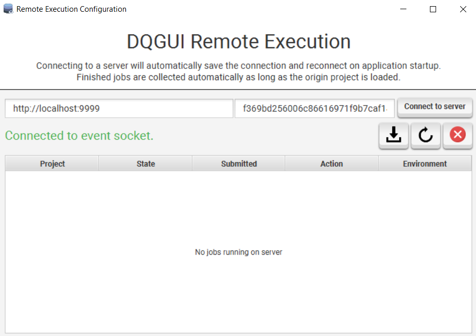
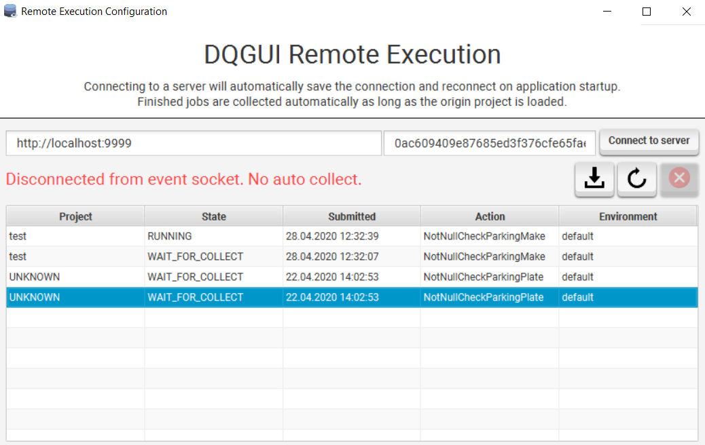
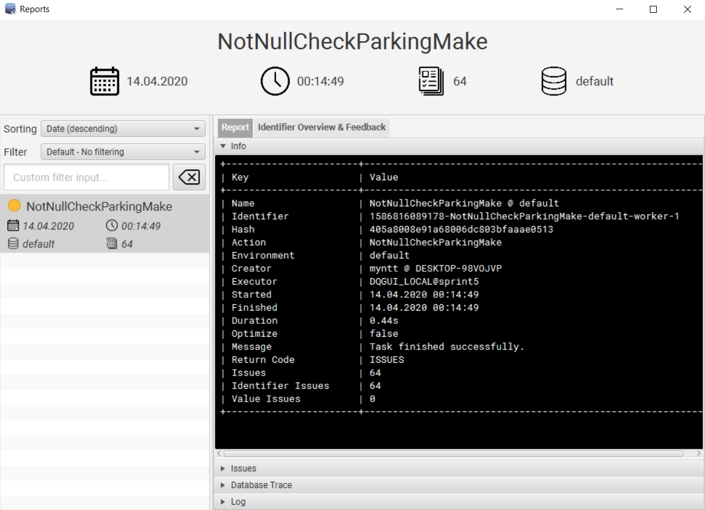
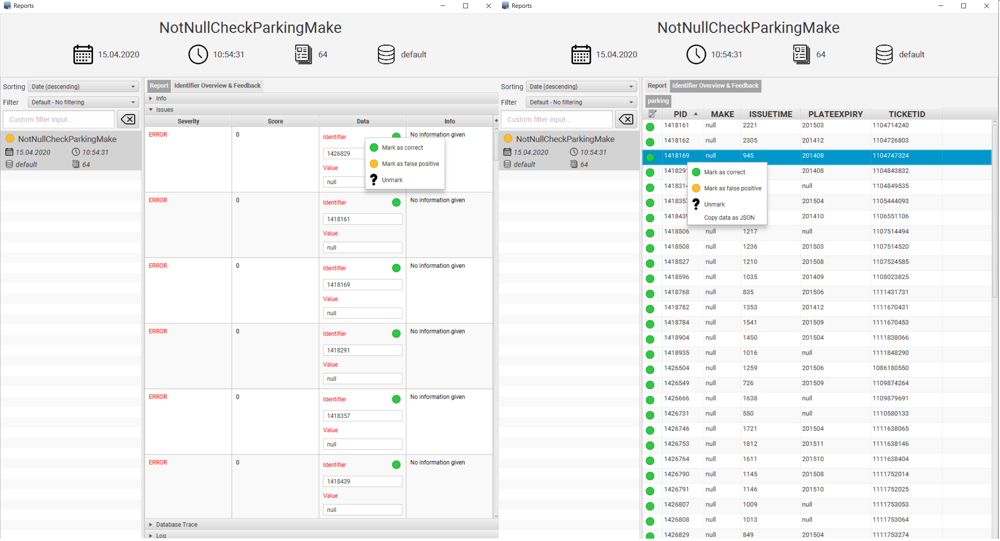
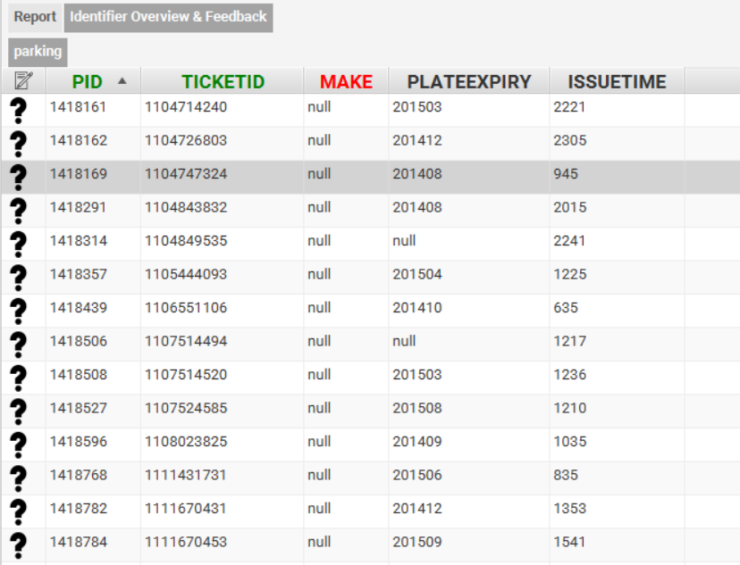

Execution and Reports
Running an Action
To run an Action you can either select it from the third combobox with the gear symbol in the main view or select it by right clicking on an Action and using the Select as action context menu entry.
To run the action locally be sure to have LOCAL selected in the first combobox.
Remote Execution
You can configure a remote execution server by opening the Remote Execution Configuration via DQGUI -> DQGUI Remote.
To add a server fill out the host and key fields and hit connect. If the connection succeeded a notification will be shown in the top right corner and the status will changed to connect to event socket.

As long as you’re connected to the event socket you can be 101% sure that remote execution will work, DQGUI will also automatically collect the finished results from the server and notify you about them.
If the text status says Disconnected from event socket. No auto collect. that means that the server might be down or might be running. Finished jobs would not be automatically collected.
Once you connected to a server DQGUI will attempt to automatically connect on every startup. A notification will inform if the attempt succeeded or failed.
Should the event socket loose connection you will also receive a notification.
Currently running or uncollected jobs are listed in the table. They’re automatically refreshed if either the socket receives a notification or a job has been sent to the server.
Via the context menu you can view the current log of the job (only if it is still running).
- the download icon will collect all jobs that match the currently loaded project
- the refresh icon will refresh the job list
- the
Xwill disconnect form the event socket - you can reconnect by clicking
Connect to server
You can than run a remote job by changing the value of the first combobox in the main view to REMOTE.

Jobs that have not been collected yet will display the WAIT_FOR_COLLECT state.
Collecting jobs by hand is possible via the download button. Only jobs that belong to the loaded project will be collected.
If DQGUI cannot determine the project UNKNOWN will be displayed as origin.
Live Logging
The log of a currently running local job can be accessed by double clicking on the job within the Active category of the Reports view in the main window.
Managing Reports
To clear reports that failed to complete due to an exception you can right click on the Finished category of the Reports view and initiate a pruning of failed tasks via the context menu.
Viewing
Reports can be viewed via the DQGUI -> Explore Reports view.

Only reports that have successfully completed are being displayed here. It is possible to search and filter them.
Removal
The report listing supports multi-selection. To remove one or more reports simply select them and delete them by either the delete key or via the right click context menu.
Feedback
| Icon | Meaning |
|---|---|
| No feedback evaluated yet | |
| Identifier marked as false positive | |
| Identifier marked as correctly evaluated |
Feedback can be viewed and edited either via the Issues section in the Report tab or via the Identifier Overview & Feedback tab.
The Identifier Overview & Feedback lists all data mapped by the identifier.
Within the Report tab it is possible to change the feedback status by using the right-click context menu within any row of the Data column.
The Identifier Overview & Feedback allows to change feedback status via the right-click context menu by clicking on any row entry.
It is also possible to copy the Identifer and Value entries by using the right-click context menu on their respective fields.
Within the Identifier Overview & Feedback a Copy data as JSON context menu item allows to copy the entire row as JSON formatted string.

The column names that match those of the IDENTIFIER in the Identifier Overview & Feedback will be colored green and placed the left most after the feedback status column (not visible in the screenshot, as from an older version).
value roles from the action are also parsed and the corresponding column names are marked red.
